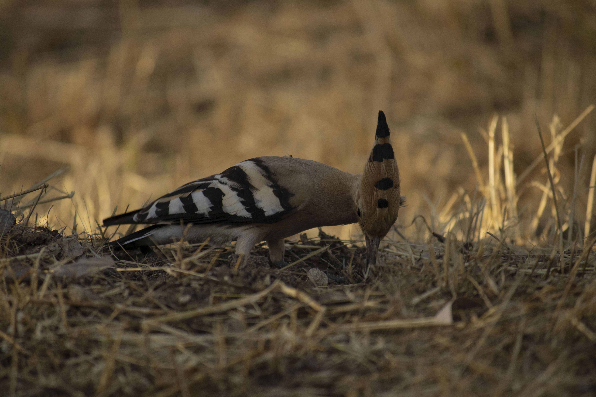
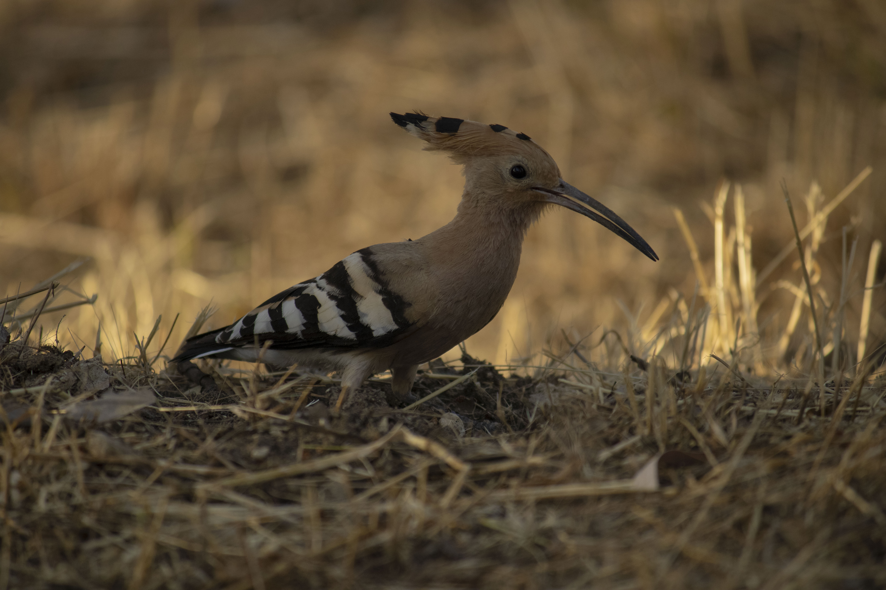
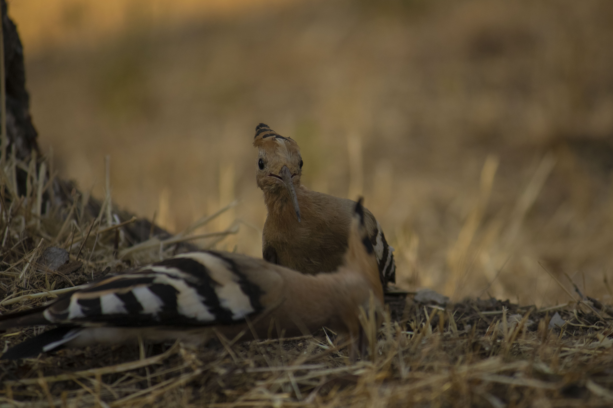
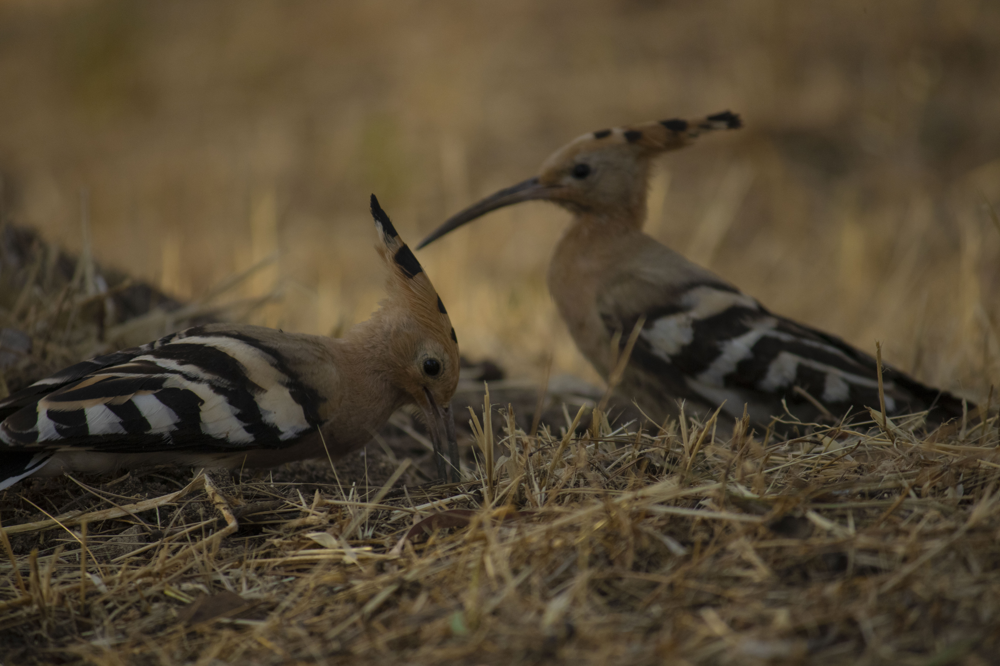

Upupa Epops
Selección de imágenes de un reportaje fotográfico personal sobre las aves de Madrid que funciona como una revisita a una de mis pasiones de pequeño: la ornitología.
REPORTAJE COMPLETO (PDF)


